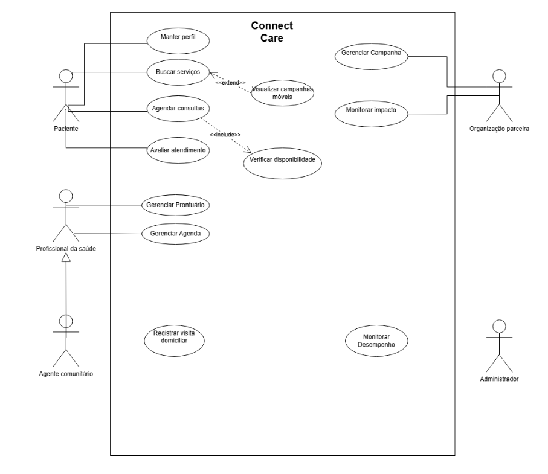

Estudo de caso DCU
Especificações de Casos de Uso
- Manter Perfil do Paciente
- Buscar Serviços de Saúde
- Monitorar Desempenho do Sistema
- Agendar Consulta
- Gerenciar Campanha
Diagrama de Caso de Uso
Introdução
O presente documento apresenta o modelo de casos de uso para o aplicativo "ConnectCare". Este sistema foi idealizado no contexto da comunidade remota "Vila Esperança", onde o acesso a serviços de saúde é restrito devido a barreiras como falta de transporte e infraestrutura limitada. O "ConnectCare" surge como uma solução tecnológica desenvolvida por um grupo de ativistas e desenvolvedores para conectar moradores a cuidados médicos, aproveitando a rede colaborativa da comunidade. O objetivo deste trabalho é representar formalmente as interações entre os usuários e o sistema através da modelagem de casos de uso.
Escopo do Sistema
O objetivo principal do sistema "ConnectCare" é reduzir as desigualdades no acesso à saúde em comunidades vulneráveis, facilitando a conexão entre pacientes, profissionais e serviços. O escopo do aplicativo abrange funcionalidades para localizar serviços de saúde próximos, agendar consultas (online e presenciais) e gerenciar o histórico digital de saúde dos pacientes. Além disso, o sistema visa apoiar a divulgação de campanhas comunitárias, como vacinação, e fornecer ferramentas para organizações parceiras monitorarem o impacto social das ações realizadas. O sistema também inclui funcionalidades administrativas para garantir a segurança e monitorar o desempenho da plataforma.
Modelagem de casos de uso
Identificação dos atores
A seguir, são identificados os atores que interagem com o sistema "ConnectCare", descrevendo seus respectivos papéis e responsabilidades conforme o cenário da comunidade Vila Esperança.
-
Paciente: Ator principal do sistema. Representa os moradores da comunidade que utilizam a plataforma para localizar serviços de saúde, agendar consultas (online ou presenciais), visualizar seu histórico médico digital e receber orientações de saúde.
-
Profissional de Saúde (Ator Genérico): Representa a classe geral de profissionais (como médicos e enfermeiros) que atendem os pacientes. Seus objetivos incluem gerenciar sua agenda de consultas, acessar o histórico médico dos pacientes para oferecer atendimento preciso e atualizar prontuários com diagnósticos e prescrições.
-
Agente Comunitário: Um tipo especializado de Profissional de Saúde. Além das funcionalidades básicas de um profissional, este ator possui funções específicas para registrar visitas domiciliares e gerar relatórios sobre as condições de saúde da comunidade, auxiliando na identificação de áreas prioritárias.
-
Organização Parceira: Entidades externas como ONGs, hospitais e instituições governamentais. Utilizam o sistema para divulgar e gerenciar campanhas de saúde (ex: vacinação), segmentar o público-alvo e monitorar o impacto social de suas iniciativas através de relatórios.
-
Administrador do Sistema: Responsável pela manutenção técnica e operacional da plataforma. Suas funções incluem monitorar indicadores de desempenho (como usuários ativos), garantir a segurança dos dados, corrigir erros e integrar novos serviços ou parceiros ao sistema.
Lista de Casos de Uso
Abaixo estão listados os Casos de Uso (UC) identificados para o sistema, representando as funcionalidades oferecidas aos atores:
-
Manter Perfil do Paciente: Permite ao paciente registrar e atualizar suas informações pessoais e condições de saúde preexistentes.
-
Buscar Serviços de Saúde: Permite ao paciente localizar clínicas, hospitais e unidades de saúde utilizando filtros de localização e tipo de atendimento.
-
Visualizar Campanhas Móveis: Funcionalidade estendida da busca, que exibe opções de campanhas itinerantes caso o paciente tenha dificuldades de transporte.
-
Agendar Consulta: Permite ao paciente selecionar um serviço e marcar um horário para atendimento.
-
Verificar Disponibilidade: Processo incluído no agendamento para validar se o horário e o profissional estão livres.
-
Avaliar Atendimento: Permite ao paciente fornecer feedback e notas sobre a consulta realizada.
-
Gerenciar Agenda de Consultas: Permite aos profissionais de saúde organizarem seus horários e visualizarem as consultas marcadas.
-
Gerenciar Prontuário Eletrônico: Permite ao profissional acessar o histórico do paciente e registrar diagnósticos, prescrições e orientações.
-
Registrar Visita Domiciliar: Permite ao agente comunitário documentar as visitas realizadas e as condições observadas nas residências.
-
Gerenciar Campanhas de Saúde: Permite às organizações parceiras cadastrarem e divulgarem iniciativas como vacinação e mutirões.
-
Monitorar Impacto Social: Gera relatórios e métricas sobre o alcance das campanhas e número de participantes.
-
Monitorar Desempenho do Sistema: Permite ao administrador acompanhar indicadores técnicos, número de usuários ativos e erros na plataforma.
